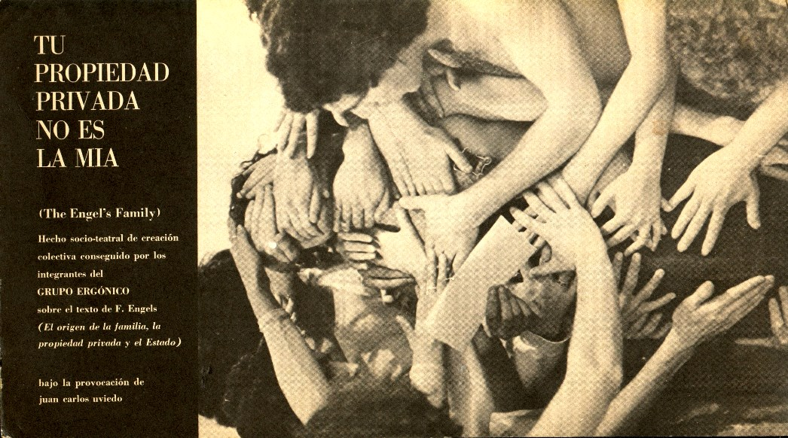
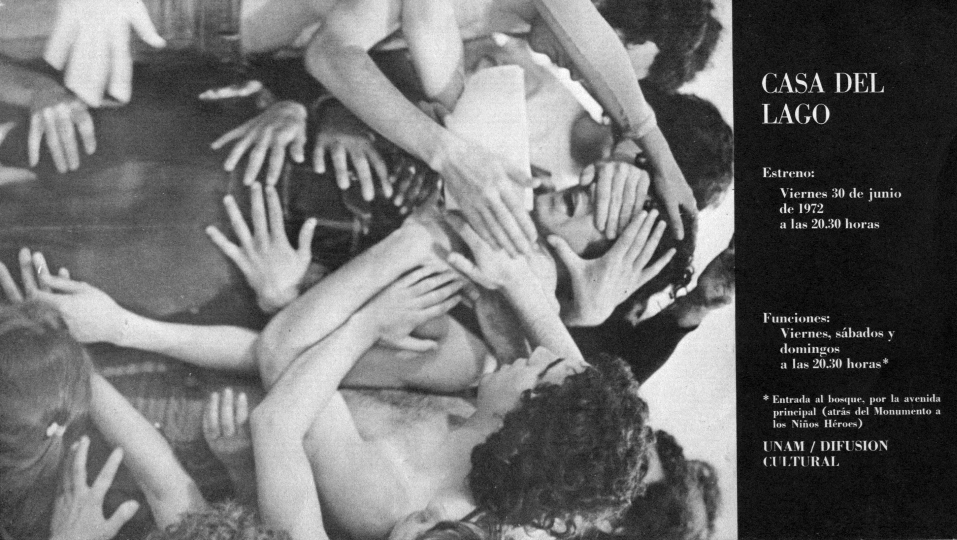
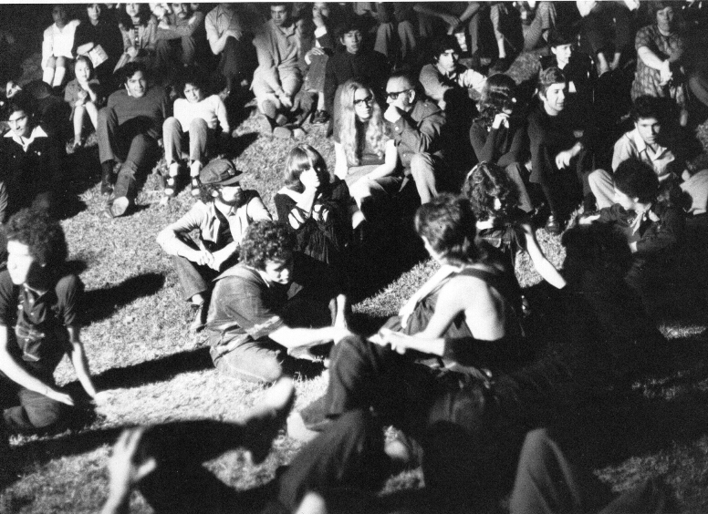
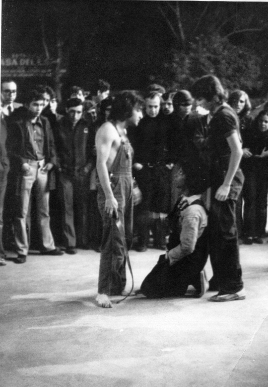
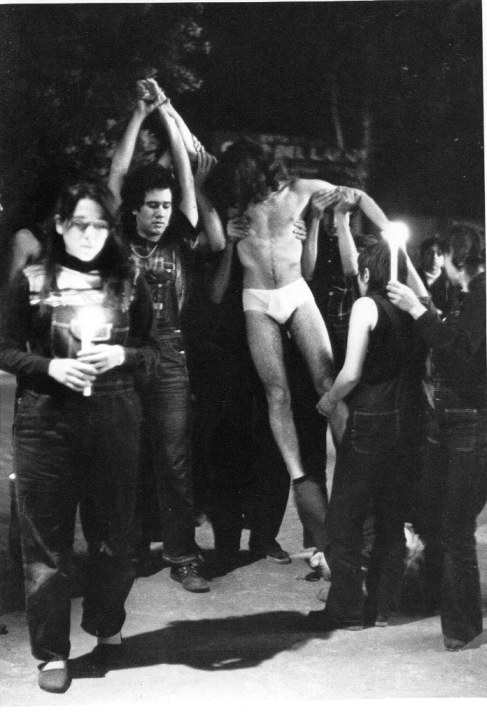
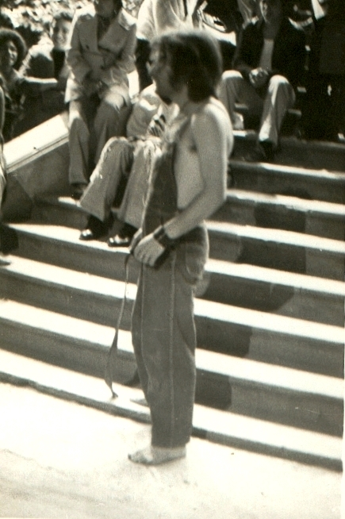

|
|
|
|
"Tu propiedad privada no es la mía" Montaje dirigido por Juan Uviedo, realizado por el Grupo Ergónico en predios de la UNAM, México. Se estrenó el 30 de junio de 1972 y fueron realizadas varias funciones (viernes, sábados y domingos). Basado en el libro "El origen de la familia, la propiedad privada y el Estado", de Engels. Durante el montaje Juan caminaba entre los actores y el público con un cinturón en la mano a modo de látigo, por momentos actuando y en otros lanzando consignas al grupo según la tensión del momento. Las funciones no tenían límite de tiempo ni un final estipulado; algunas llegaron a durar más de 3 horas. Estracto del escrito "Tras la pista de Uviedo: experimentos socioteatrales de un paria" (Ana Longoni, publicado en 2015 en el marco de la muestra "Con la provocación de Juan Carlos Uviedo" en México): "Llega a México en abril de
1972, expulsado de Guatemala, entonces bajo la dictadura militar de Arana
Osorio. Lo acompañaban la guatemalteca Ana María Quezada y el estadounidense
Eddie Keagan, con quienes conformaba un trío amoroso y un sólido equipo de
trabajo. A ellos tres se unen a poco de llegar a México Olivier Debroise, de 19
años, Sarah Minter, de 17, su hermano Yago, de 15, Héctor de Anda, Athenea
Baker, Zaniah Guvan, Mario Ficachi, Alejandra Zea, Nelson Oxman, Jacques
Riviere, Julia Marichal y muchos otros. Todos ellos conformaron el grupo Ergónico,
que se instaló inicialmente en la Casa del Lago. Se trata de un predio de la
UNAM dentro del popular Bosque de Chapultepec, que –dirigida entonces por
Benjamín Villanueva– desplegaba una profusa actividad teatral, musical,
literaria y artística. A poco de llegado a México, Uviedo realizó en la Casa
del Lago talleres, conferencias y seminarios de entrenamiento corporal y formación
teatral. Allí estrenaron, en junio
de 1972, la primera puesta de Ergónico “The Engels’ Family. Tu propiedad
privada no es la mía”, basada en el libro de Federico Engels El origen
de la familia, la propiedad privada y el Estado, ante una masiva
concurrencia de mil quinientas personas. Unos cuarenta actores dispersos en los
jardines, sobre los árboles o en el lago se entremezclaban entre los muchos
asistentes a las sucesivas presentaciones, que continuaron durante dos meses,
los viernes, sábados y domingos. El hecho teatral estaba construido a partir de una secuencia de bloques intercambiables (denominados “adoración”, “castración”, “revolución”, “amor”, “trabajo”), que se abrían con la lectura de un fragmento (desde una noticia sobre la represión a los estudiantes del Politécnico hasta una cita del Marqués de Sade o el estribillo de una reconocible publicidad televisiva). Cada bloque, a su vez, se subdividía en diversas “situaciones”. Sarah Minter reconstruye: 'Uviedo, dentro de la obra, jugaba el papel de provocador. Con detalles musicales provocaba ciertas situaciones. Tenía grabaciones, un micrófono, un magnetófono. Estaba siempre dentro de la obra como dirigiendo o diciendo algo y poniendo música. A partir del trabajo que habíamos hecho, él hacía que lo identificáramos con algún tipo de sonido o música y esa era su manera de disparar un tipo de emoción o sentimiento. Aunque respondíamos a una situación precisa nunca era igual, porque no era un teatro de marcaje o de texto.' (Minter, 2013)."
Afiches y fotos del montaje      
|